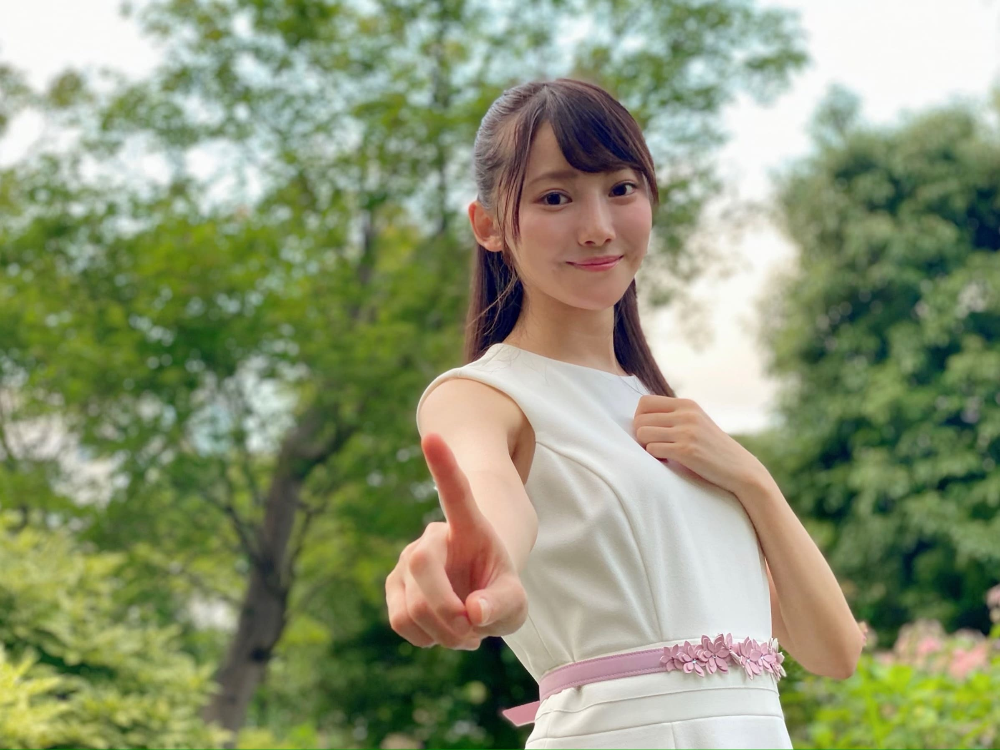
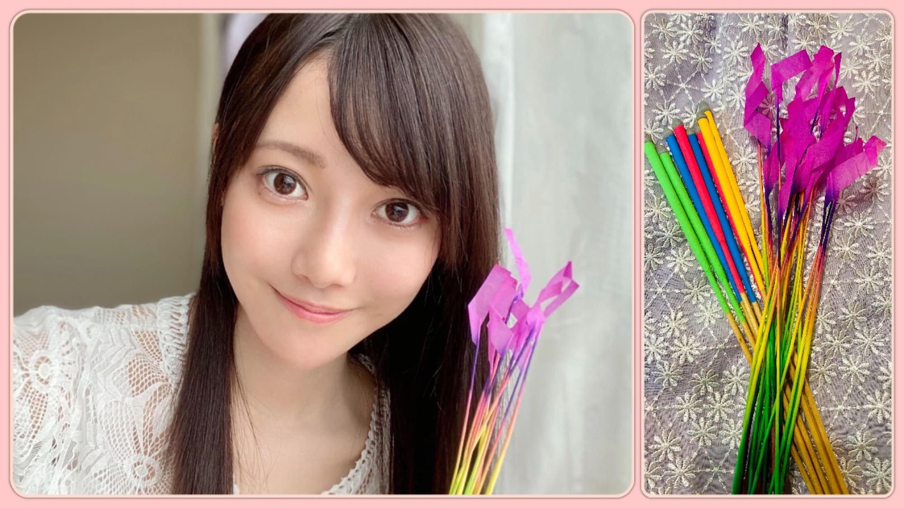
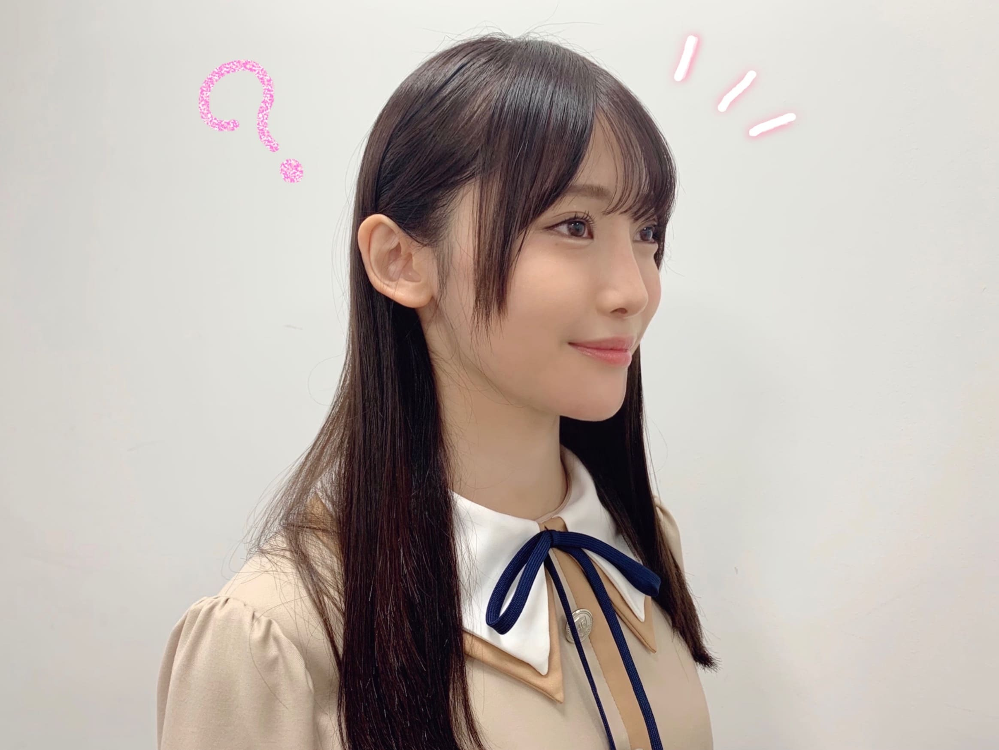
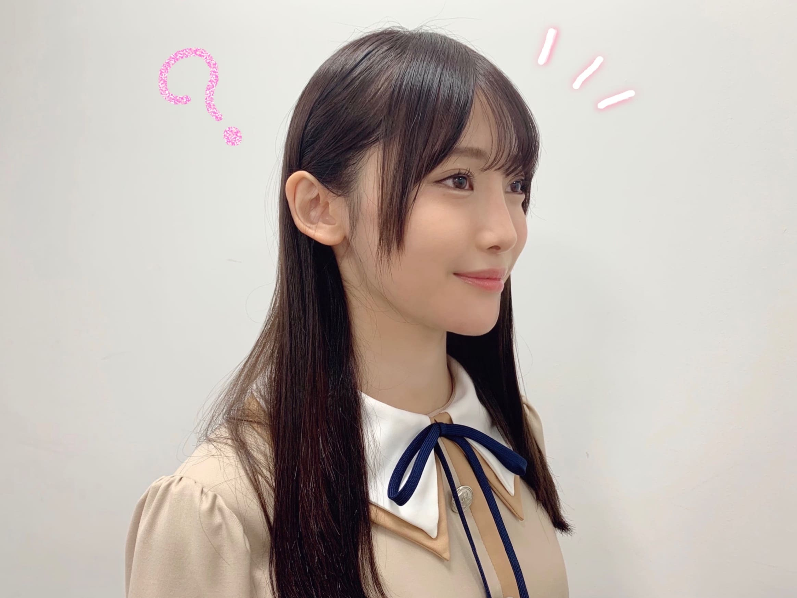
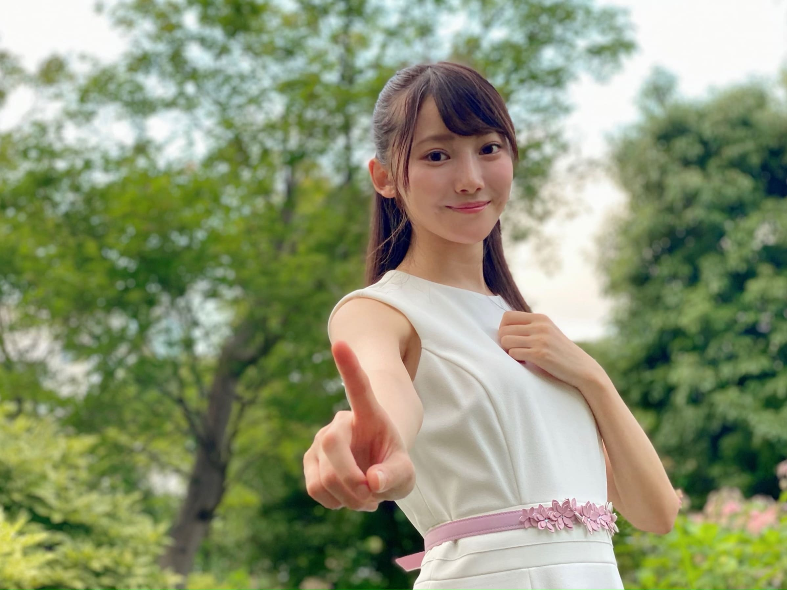
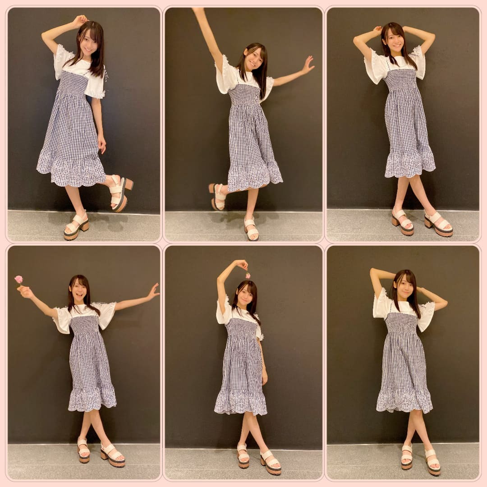
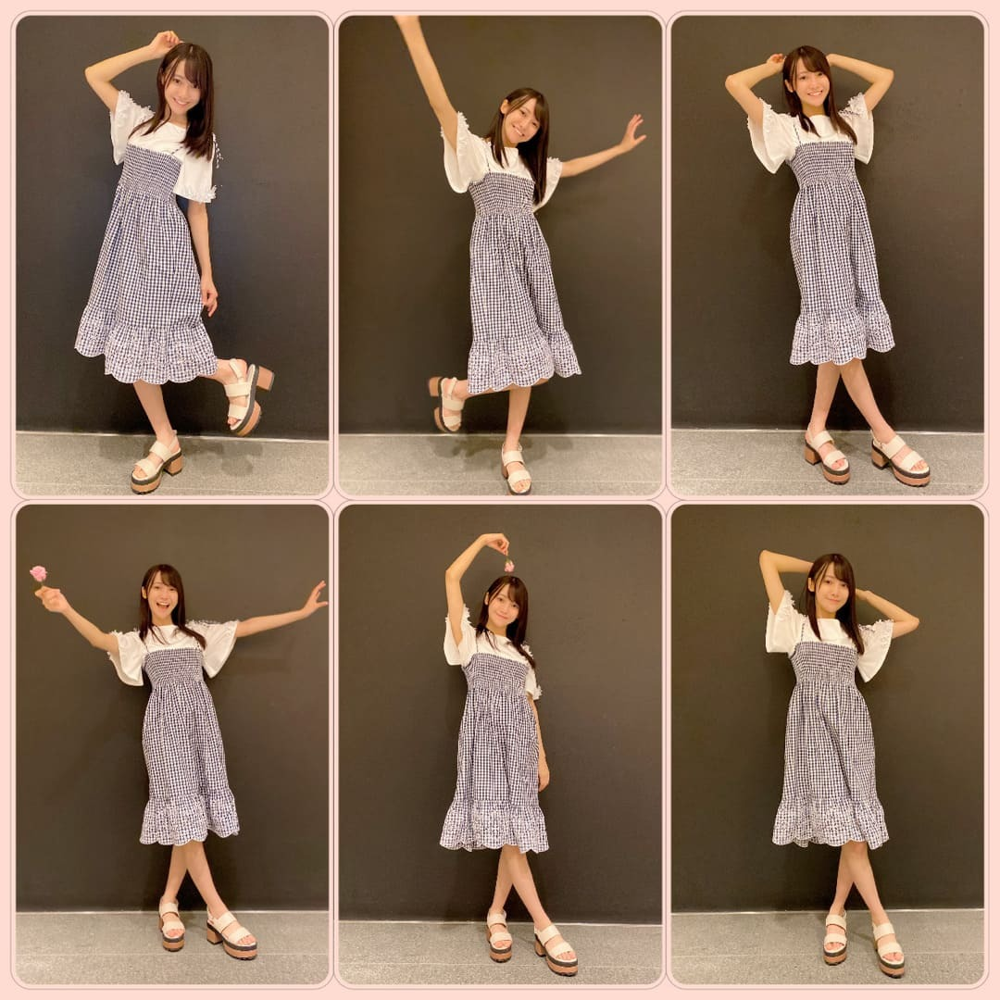
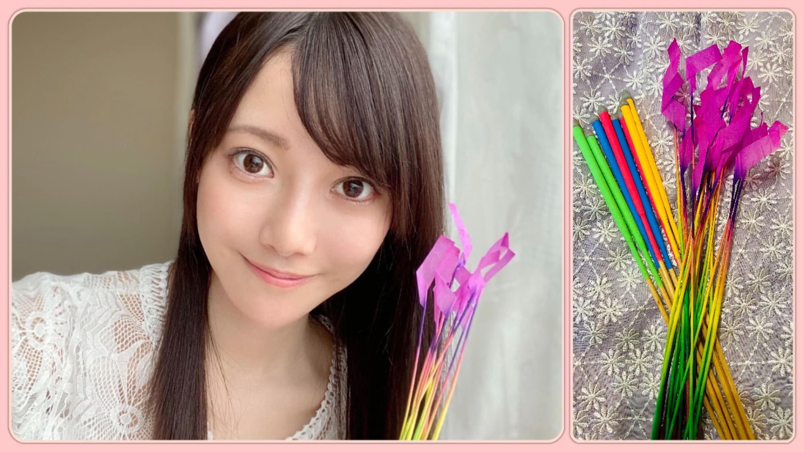

2020/0731Fri黒見明香(16)は全体的にヤバい？
今月も、本当にお疲れ様でした☺︎７月最終日✨
ココを見つけてくださり ありがとうございます♪
乃木坂46 新４期生の黒見明香です。
すこーしだけ自己紹介させてくださいませ☺︎
♪:*:･･:*:･･:*:･･:*:･･:*:･･:*:･♪:*:･･:*:･･:*:･･:*:･･:*:･･:*:･♪
黒見 明香（くろみ はるか）
2004年1月19日生まれ 16才
香港生まれ・東京都出身です
あだ名： くろみん・黒見ちゃん
3の倍数9・6・3(くろみ)
と覚えてもらえたら嬉しいです♪
＊
いただいたコメントから↓
◎ノギザカスキッツの次回予告でくろみちゃんヤバいみたいに出てたね？
テレビ番組欄に、ノギザカスキッツ＃8
「黒見明香は全体的にヤバい？」と載ってて
⚫︎くろみん林ちゃんにボケ扱いされてますけど
自分で評価したら、その通りですか？
♪:*:･･:*:･･:*:･･:*:･･:*:･･:*:･♪:*:･･:*:･･:*:･･:*:･･:*:･･:*:･♪
-:-:୨୧:-:- 乃木坂を応援してくださる皆さんとの約束を叶えられるよう頑張ります✩︎⡱
【 オーディション その２ 】
３次審査では、「裸足でSummer」のダンスを踊った部屋で、
ドキドキしていました✨
遠くからでもキラキラしていらっしゃった感動が、
オーディションノートにいっぱい書いてあります笑
♪:*:･･:*:･･:*:･･:*:･･:*:･･:*:･♪:*:･･:*:･･:*:･･:*:･･:*:･･:*:･♪

-:-:୨୧:-:- 明日からもう８月〜！少しでも夏気分をお届けできるよう、ちょこっと線香花火を買ってみたよ〜✨
⚫︎ここ数年は神宮ライブで見てたから、今年は見れないと思うと寂しいねぇ？
⚫︎来年はくろみんとメンバーとファンと皆で一緒に花火見られますように
寂しいですねー...(ノ_＜)
スーパーに100円花火が売られていたので、
「線香花火」を買ってみました！
♬ *。♩*。♬
♪:*:･･:*:･･:*:･･:*:･･:*:･･:*:･♪:*:･･:*:･･:*:･･:*:･･:*:･･:*:･♪
⚫︎くろみんがコメントを読むのが楽しみと言ってくれて、自分も役に立っているのかなと思いうれしいです！
もちろんです (*ˊᵕˋ*)੭♡
本当にありがとうございます✩︎⡱
今回初めてコメント書いてみたよ！という方も、
今日はこんな事があったんだよーと報告して下さる方も、
大切な時間を使ってお話しして下さり
本当にありがとうございます✨
あなたに出逢えた奇跡に、感謝しながら、
大事に、一つずつ全部読ませて頂いています((〃ω〃))
皆さんのことを知ることが出来る、
私の１日の中で１番幸せな時間です♩
直接お話しできる時が、 待ち遠しいです✩︎⡱
＊
明日からいよいよ８月！
暑い日が続いて、きっと心も体も
夏バテしちゃう時もあるかと思います。。
どうぞ、皆さんが 少しでも
ひとときリラックスできますように...✩︎⡱
と願っています(*´-`)
初めて会える日を、楽しみに待っています♪
＊
明日は、わたしの大好きな眼鏡姿を
披露してくれた璃果ちゃん♡ですよー！
読んでくださり、本当にありがとうございます☺︎
次回も、会えたら嬉しいなぁ✨
またねヾ(･ω･*)
くろみはるか☺︎
☆ 本日のあなたのラッキーナンバー：５ と ９
♪:*:･･:*:･･:*:･･:*:･･:*:･･:*:･♪:*:･･:*:･･:*:･･:*:･･:*:･･:*:･♪
・
・
・
＜ちょこっとアンコール♬笑＞
⚫︎BUBKA「乃木坂46時間TV特集」すごくない？すでに懐かしいよ笑
♬ *。♩*。♬
⚫︎飛鳥ちゃんのこと尊敬してるって、showroomで言ってたよね？
⚫︎乃木坂工事中は見た？面白かったよねー。
⚫︎せーらちゃんの真似をするかっきーの関西弁が可愛かったね。
⚫︎たまちゃんのJK語は自分もよく使うので共感できたし、他のも充実してました。くろみんはJK語、使います？
やっぱり「ものまね大賞！」は最高ですよね(〃ω〃)
JK語、使えてないかもです\(//∇//)\勉強になりました！
⚫︎ここ最近、早川聖来さんと同じ日にブログ更新してますね！
まさか2人で何か企てていたり...？
残念ながら、ブログの更新日は示し合わせて無かったですー^^;
気が合うのかなー♪嬉しいです☺︎
聖来ちゃんとは、安全距離を守りながらすれ違う時には、必ず
ハイテンションでエアでハイタッチしながら、
♬ *。♩*。♬
⚫︎文書量が多すぎて、読むのが大変かな
前回聞いた、地元のお味噌汁やお雑煮、ダシ文化のお話も教えてくださりありがとうございますヾ(･ω･*)o すごく興味深くコメント読ませて頂きました〜‼︎
ファンの皆の総称、明香叶った、｢ハルカ☆カナタ｣案もありがとうございます✨
お仕事が大変な方、面接がある方、テストに向けて勉強頑張っている方、テストの採点が大変な先生も、元気になるために闘っている方も、どうか、あなたの頑張りが光になりますようにー‼︎
♬ *。♩*。♬
明日はいつも笑顔がとっても素敵で、人懐っこくて
✨レイちゃん♡お誕生日迎える皆さま✨
お誕生日おめでとうございます♪
どうぞ素敵な一年になりますよう✩︎⡱
♪:*:･･:*:･･:*:･･:*:･･:*:･･:*:･♪:*:･･:*:･･:*:･･:*:･･:*:･･:*:･♪
ここまで読んでくださったアナタ、ほんとうにありがとう♡
またねヾ(･ω･*)
ココを見つけてくださり ありがとうございます♪
乃木坂46 新４期生の黒見明香です。
すこーしだけ自己紹介させてくださいませ☺︎
♪:*:･･:*:･･:*:･･:*:･･:*:･･:*:･♪:*:･･:*:･･:*:･･:*:･･:*:･･:*:･♪
黒見 明香（くろみ はるか）
2004年1月19日生まれ 16才
香港生まれ・東京都出身です
あだ名： くろみん・黒見ちゃん
3の倍数9・6・3(くろみ)
と覚えてもらえたら嬉しいです♪
＊
いただいたコメントから↓
◎ノギザカスキッツの次回予告でくろみちゃんヤバいみたいに出てたね？
テレビ番組欄に、ノギザカスキッツ＃8
「黒見明香は全体的にヤバい？」と載ってて
ビックリしました・・・Σ（ﾟдﾟll）驚
＊
今まで一番印象的だった言葉は、
占いの先生がおっしゃった、
「あなたは一家の はぐれ者ですっ！」でした*_*;;
" ソンナコトナイヨー？ " と思っていましたが、
給食のパンを口一杯 詰めすぎて
息ができなくて保健室に行ったり...
「暑いからキャップ被って」と言われて
水泳用のメッシュ帽子を被って来てしまったり...と
思い返すとイタイ思い出はたくさんあるので、
意外と当たっているのかもしれません。。。
"ノギザカスキッツ"恐るべし！ですね笑
いまから、次回放送もドキドキしています(*´-`)
♪:*:･･:*:･･:*:･･:*:･･:*:･･:*:･♪:*:･･:*:･･:*:･･:*:･･:*:･･:*:･♪

◎ 佐藤璃果ちゃんが「この向きが好き」と遠くからズームしてくれた一枚です\(//∇//)\
【 内緒にしてたこと✩︎⡱ 】
実は、いまだにカタカナも苦手なのですが、、、
小学校一年生の時に、
「ひらがな」が読めないことを隠していたら、
眼科検診で、ひらがな票が貼られていて、
「(お) あ・・・かなぁ」
「(ね) わ・・・にみえるー」
と、答えていたら、一個も読めないまま、
「精密検査をしてください」
っていうお手紙を頂いて学校から帰って来たので...
お母さんが勘違いして
「今まで、視力が悪い事に気づけなくてごめんね」
と号泣しちゃったのですが、、、
実は、適当にひらがなを読めるフリして
答えていただけでした・・・( ´_ゝ`)汗
後日とっても叱られたのでございます。
正直でなければいけません（反省）
♬ *。♩*。♬
＊
今まで一番印象的だった言葉は、
占いの先生がおっしゃった、
「あなたは一家の はぐれ者ですっ！」でした*_*;;
" ソンナコトナイヨー？ " と思っていましたが、
給食のパンを口一杯 詰めすぎて
息ができなくて保健室に行ったり...
「暑いからキャップ被って」と言われて
水泳用のメッシュ帽子を被って来てしまったり...と
思い返すとイタイ思い出はたくさんあるので、
意外と当たっているのかもしれません。。。
"ノギザカスキッツ"恐るべし！ですね笑
いまから、次回放送もドキドキしています(*´-`)
♪:*:･･:*:･･:*:･･:*:･･:*:･･:*:･♪:*:･･:*:･･:*:･･:*:･･:*:･･:*:･♪

◎ 佐藤璃果ちゃんが「この向きが好き」と遠くからズームしてくれた一枚です\(//∇//)\
【 内緒にしてたこと✩︎⡱ 】
実は、いまだにカタカナも苦手なのですが、、、
小学校一年生の時に、
「ひらがな」が読めないことを隠していたら、
眼科検診で、ひらがな票が貼られていて、
「(お) あ・・・かなぁ」
「(ね) わ・・・にみえるー」
と、答えていたら、一個も読めないまま、
「精密検査をしてください」
っていうお手紙を頂いて学校から帰って来たので...
お母さんが勘違いして
「今まで、視力が悪い事に気づけなくてごめんね」
と号泣しちゃったのですが、、、
実は、適当にひらがなを読めるフリして
答えていただけでした・・・( ´_ゝ`)汗
後日とっても叱られたのでございます。
正直でなければいけません（反省）
♬ *。♩*。♬
⚫︎くろみん林ちゃんにボケ扱いされてますけど
自分で評価したら、その通りですか？
ソンナコトナイヨー・・・><;;
と思っていますが、ツッコミが林ちゃん一人で大変なのは
なんとなく想像がつきます汗
るなぴちゃん♡ これからもマイペースな四人をよろしくね☺︎笑
♪:*:･･:*:･･:*:･･:*:･･:*:･･:*:･♪:*:･･:*:･･:*:･･:*:･･:*:･･:*:･♪
-:-:୨୧:-:- 乃木坂を応援してくださる皆さんとの約束を叶えられるよう頑張ります✩︎⡱
【 オーディション その２ 】
⚫︎オーディション会場での話は、女の子だけしか聞けないから羨ましい！貴重でしたね？
⚫︎私はアイドルになるのが夢です。オーディションのこともっと書いてほしいです。
⚫︎私はアイドルになるのが夢です。オーディションのこともっと書いてほしいです。
前回の続きで、セミナーで 秋元真夏さん・鈴木絢音さん・久保史緒里さんの
大切なお話を聞かせて頂いた後、奇跡的にも シードのご連絡をいただき、
"どうしよう・・・" "なんて伝えたらいいんだろう・・・"とたくさん悩んだ後、
セミナーから3ヶ月経った７月に、２次審査に参加しました。
＊
緊張しすぎてしまい、アカペラで歌いながら泣いてしまったことを
覚えています・・・。
とっても凹んで、もう二度とないかもしれない ...と後悔しました。
震える手で郵便受けを開けた時に、
"もしもまた失敗してしまっても、後悔しないよう 自分の思いだけは伝えよう！"と、
心に誓ったことを、日記に書いています(*´-`)
＊
３次審査では、「裸足でSummer」のダンスを踊った部屋で、
『この部屋で、乃木坂・欅坂・けやき坂のメンバーは練習していて、
新しい曲が生み出されていくんだよ』
というお話を聞かせて頂いて、感動で胸がいっぱいになりました。
(*当時は「けやき坂46」さんでした☺︎）
そして何より、緊張して座ってるわたし達に、
廊下を通りかかった与田祐希さんが
ガッツポーズで "が・ん・ばっ・て・ね"と口パクで
伝えてくださって、緊張が吹っ飛んだ思い出があります。
お姿も心も美しすぎて、心の底から憧れました。
＊
廊下の奥、遠〜くにいらっしゃる、
大園桃子さん♡梅澤美波さん♡をお見かけしてしまい、
ドキドキしていました✨
遠くからでもキラキラしていらっしゃった感動が、
オーディションノートにいっぱい書いてあります笑
＊
勇気を出してオーディションを受けた、
全ての女の子の想いも胸に、一緒に背負って、
一歩一歩坂を上って行きたいです。
どうか道に迷ってしまった時は「ちがうよー！」て
教えてください、導いて下さったら嬉しいです ((〃ω〃))
〜（続く）いよいよSHOWROOM審査＆最終審査のお話✩︎⡱ 〜
オーディション その１はココだよ↓
https://blog.nogizaka46.com/newfourth/2020/07/057138.php
オーディション その１はココだよ↓
https://blog.nogizaka46.com/newfourth/2020/07/057138.php
♪:*:･･:*:･･:*:･･:*:･･:*:･･:*:･♪:*:･･:*:･･:*:･･:*:･･:*:･･:*:･♪
恥ずかしながら、リクエストして下さった、アホなタイマー写真シリーズです\(//∇//)\笑
恥ずかしながら、リクエストして下さった、アホなタイマー写真シリーズです\(//∇//)\笑
⚫︎練習の自撮りやセルフタイマー撮りもブログに掲載を続けてくれると嬉しいな～
⚫︎タイマー写真のシリーズ化待ってる！笑
⚫︎タイマー写真のシリーズ化待ってる！笑
一人で撮ってると、恥ずかしさMAXになってしまいますが・・・
笑って？楽しんでいただける？写真が撮れるよう、
いっぱい練習しようと思います〜✩︎⡱
あたたかく見守って下さり、ありがとうございます☺︎
♬ *。♩*。♬
⚫︎ 巻き髪／三つ編み／三つ編みツインテール／ハーフツイン／高いところのお団子／ヘアバンド／カチューシャ／メガネ姿／浴衣・・・
とたくさんのリクエスト本当にありがとうございます (*ˊᵕˋ*)੭
アイディア頂いて嬉しいです✨
少しずつ載せさせてくださいね〜♬
♪:*:･･:*:･･:*:･･:*:･･:*:･･:*:･♪:*:･･:*:･･:*:･･:*:･･:*:･･:*:･♪

-:-:୨୧:-:- 明日からもう８月〜！少しでも夏気分をお届けできるよう、ちょこっと線香花火を買ってみたよ〜✨
⚫︎ここ数年は神宮ライブで見てたから、今年は見れないと思うと寂しいねぇ？
⚫︎来年はくろみんとメンバーとファンと皆で一緒に花火見られますように
寂しいですねー...(ノ_＜)
スーパーに100円花火が売られていたので、
「線香花火」を買ってみました！
♬ *。♩*。♬
今年は、真夏の全国ツアーや花火大会を
直接見に行くことは難しいけれど、
気持ちだけでも、皆さんと一緒に
花火をしたいなー♬
直接見に行くことは難しいけれど、
気持ちだけでも、皆さんと一緒に
花火をしたいなー♬
来年は一緒に見れますように・・・と言う願いを込めて
楽しみたいな、と思っています✩︎⡱
モバイルも「真夏の花火大会2020」中ですよね〜☺︎
"あつまれどうぶつの森"の花火も楽しみだなー笑
♪:*:･･:*:･･:*:･･:*:･･:*:･･:*:･♪:*:･･:*:･･:*:･･:*:･･:*:･･:*:･♪
⚫︎くろみんがコメントを読むのが楽しみと言ってくれて、自分も役に立っているのかなと思いうれしいです！
もちろんです (*ˊᵕˋ*)੭♡
たくさんのコメントや感想、
本当にありがとうございます✩︎⡱
今回初めてコメント書いてみたよ！という方も、
今日はこんな事があったんだよーと報告して下さる方も、
大切な時間を使ってお話しして下さり
本当にありがとうございます✨
あなたに出逢えた奇跡に、感謝しながら、
大事に、一つずつ全部読ませて頂いています((〃ω〃))
皆さんのことを知ることが出来る、
私の１日の中で１番幸せな時間です♩
直接お話しできる時が、 待ち遠しいです✩︎⡱
＊
明日からいよいよ８月！
暑い日が続いて、きっと心も体も
夏バテしちゃう時もあるかと思います。。
どうぞ、皆さんが 少しでも
ひとときリラックスできますように...✩︎⡱
と願っています(*´-`)
初めて会える日を、楽しみに待っています♪
＊
明日は、わたしの大好きな眼鏡姿を
披露してくれた璃果ちゃん♡ですよー！
読んでくださり、本当にありがとうございます☺︎
次回も、会えたら嬉しいなぁ✨
またねヾ(･ω･*)
くろみはるか☺︎
☆ 本日のあなたのラッキーナンバー：５ と ９
♪:*:･･:*:･･:*:･･:*:･･:*:･･:*:･♪:*:･･:*:･･:*:･･:*:･･:*:･･:*:･♪
・
・
・
＜ちょこっとアンコール♬笑＞
⚫︎BUBKA「乃木坂46時間TV特集」すごくない？すでに懐かしいよ笑
BUBKA様が徹底レビュー載せて下さり、
わたしも感動がよみがえって、心臓がドキドキしています✨
新４期生のことも「大舞台の一部始終」として書いてくださり、
星野みなみさん♡の「おうち時間」が本当に可愛いすぎます(*´-`)
保存版にして、繰り返し読ませて頂こうと思っています♪笑
♬ *。♩*。♬
⚫︎飛鳥ちゃんのこと尊敬してるって、showroomで言ってたよね？
⚫︎ブログで飛鳥ちゃんに憧れてるって教えてくれたから、昨日の飛鳥ちゃんのドラマ見たかな？
「リモートで殺される」怖くてドキドキしながらも、目が離せず、しっかり見させて頂きました〜
お芝居によってガラッと表情が違うのに、どの役の時も、齋藤飛鳥さん♡らしさを感じで、このドラマでは、まっすぐで瞬きをほとんどしない強い目線や、ミステリアスな表情に"さすがだなぁ..."と惹き込まれました。カッコ良くって、可愛らしくて大好きです(*´-`)
♬ *。♩*。♬
⚫︎せーらちゃんの真似をするかっきーの関西弁が可愛かったね。
⚫︎たまちゃんのJK語は自分もよく使うので共感できたし、他のも充実してました。くろみんはJK語、使います？
やっぱり「ものまね大賞！」は最高ですよね(〃ω〃)
女王 和田まあや♡さん大好きですし、かっきー＆聖来ちゃんの２人のものまねも本当にそっくりで可愛かったですよねー✨
JK語、使えてないかもです\(//∇//)\勉強になりました！
今度学校で使ってみようと思います♩
♬ *。♩*。♬
⚫︎ここ最近、早川聖来さんと同じ日にブログ更新してますね！
まさか2人で何か企てていたり...？
残念ながら、ブログの更新日は示し合わせて無かったですー^^;
気が合うのかなー♪嬉しいです☺︎
聖来ちゃんとは、安全距離を守りながらすれ違う時には、必ず
ハイテンションでエアでハイタッチしながら、
遠く の手を重ね合わせて 「おつかれさまー！！」
と言うのが恒例で、会う度に元気に貰っている大好きな存在です♡
♬ *。♩*。♬
⚫︎北川悠理ちゃんが坂道の火曜日でも書いてくれてたけど悠理ちゃんとも距離は縮まった？
と言うのが恒例で、会う度に元気に貰っている大好きな存在です♡
♬ *。♩*。♬
⚫︎北川悠理ちゃんが坂道の火曜日でも書いてくれてたけど悠理ちゃんとも距離は縮まった？
⚫︎46時間TVの後に、ゆりちゃんともそれだけ距離が縮まったのかな？
北川悠理ちゃん♡とは、オーディション合格後のレッスンの時から、仲良くして貰って、楽しい思い出がたくさんあるよー！
46時間TVでも、一緒にお菓子のお家を作ったり、お話したり出来て、さらに距離が縮まって嬉しかったよーー！！悠理ちゃんだけの世界観が大好きです✨
♬ *。♩*。♬
♬ *。♩*。♬
⚫︎くろみん明日の日向坂の配信ライブ観るのかな？乃木坂のライブもほんま楽しみにしてるよ！！
日向坂46さんの配信ライブ
日向坂46さんの配信ライブ
『HINATAZAKA46 Live Online, YES! with YOU!』
いよいよ今夜ですねー！
どんなライブになるのかな！と私も今からワクワクしています☺︎
いよいよ今夜ですねー！
どんなライブになるのかな！と私も今からワクワクしています☺︎
＊
初めて乃木坂46としてのライブをさせて頂ける日も本当に待ち遠しいです。
やっぱり...ライブは特別✨ですよね？大好きだなぁ〜♡
やっぱり...ライブは特別✨ですよね？大好きだなぁ〜♡
♬ *。♩*。♬
⚫︎くろみんが初めて見たMVや印象に残っているMVはなんですか？
⚫︎のぎ動画で、フルのMVをたくさん見ようと思ってるんですが、くろみんおすすめのMVは、なんですか？
ねたばれや、わたしの拙い説明でせっかくの美しい世界観を邪魔しちゃったら...と悩み、
たくさんあって、語り出すともっと長くなくなってしまうので・・・
（久保史緒里さんの、MV解説大好きです((〃ω〃))）
⚫︎くろみんが初めて見たMVや印象に残っているMVはなんですか？
⚫︎のぎ動画で、フルのMVをたくさん見ようと思ってるんですが、くろみんおすすめのMVは、なんですか？
ねたばれや、わたしの拙い説明でせっかくの美しい世界観を邪魔しちゃったら...と悩み、
たくさんあって、語り出すともっと長くなくなってしまうので・・・
（久保史緒里さんの、MV解説大好きです((〃ω〃))）
特に、先輩方の"卒業曲"のMVは、すごくいろんな想いが交差してしまって、印象的で、特別な気持ちで畏まった気持ちで見ています。らしさが溢れていて、メンバー同士の、制作したスタッフの皆さんの、"愛"が詰まっていて、何度繰り返し見ても飽きる事なく、切なくきゅんとした気持ちになっています✩︎⡱
♬ *。♩*。♬
⚫︎私は爬虫類が大の苦手なんですが、クロミちゃんは蛇を首に巻いて50メートル走を8秒台で走れますか？
わたしも、苦手です汗
この間、撮影の際に、ヤモリさんがおいでになりましたΣ（ﾟдﾟll）
きゃぁぁーーーと固まっていたのですが、
マネージャーさんが捕まえて逃して下さいました。
さすが乃木坂のマネージャーさんだ！と思いました☺︎
（巻いてなくても、8秒台で走れませんー！運動会毎年恒例でビリなのです汗）
♬ *。♩*。♬
⚫︎7/27は『スイカの日』好き～？
♬ *。♩*。♬
⚫︎私は爬虫類が大の苦手なんですが、クロミちゃんは蛇を首に巻いて50メートル走を8秒台で走れますか？
わたしも、苦手です汗
この間、撮影の際に、ヤモリさんがおいでになりましたΣ（ﾟдﾟll）
きゃぁぁーーーと固まっていたのですが、
マネージャーさんが捕まえて逃して下さいました。
さすが乃木坂のマネージャーさんだ！と思いました☺︎
（巻いてなくても、8秒台で走れませんー！運動会毎年恒例でビリなのです汗）
♬ *。♩*。♬
⚫︎7/27は『スイカの日』好き～？
スイカといえば、もちろんっ！
川後陽菜さん♡斉藤優里さん♡西野七瀬さん♡ 伊藤かりんさん♡伊藤純奈さん♡
『スイカ』ですよね☺︎大好きです！
スイカのおはなし↓
https://blog.nogizaka46.com/newfourth/smph/2020/05/056205.php♬ *。♩*。♬
⚫︎文書量が多すぎて、読むのが大変かな
そうですよね、ごめんなさい!!
今日もとても多くなってしまい、反省です。
いろいろ試行錯誤していますが、
どうかまだしばらく、見守っていただけたら嬉しいです(*´-`)
⚫︎黒見さんも乃木坂さんの一員なのですからＴＶの前で感激されるのではなくご自分があの場面でパフォーマンスされることを目標により一層の研鑽に励んでください。
はい、大切な楽曲を、大好きな歌が歌えるように、、、。
パフォーマンスできるように、先輩方の背中から学んで、頑張りたいと思います。
♬ *。♩*。♬
⚫︎街でブルース・リーのような人を、見たことはありますかぁ～～？
ブルース・リーさんの銅像だけかなぁ、、、街で見かけたらびっくりしそうですね ！
⚫︎スイーツは好きなのかな？好きなケーキとかある？
フルーツがのってるケーキが大好きです〜♡
ケーキはケーキでも、パンケーキも美味しくて大好きです♪
パンケーキとホットケーキって違うのかなぁ・・・？
♬ *。♩*。♬
⚫︎今月いっぱいで名入りサイリウム、誰かまとめて 告知した方がいいんじゃない？
⚫︎街でブルース・リーのような人を、見たことはありますかぁ～～？
ブルース・リーさんの銅像だけかなぁ、、、街で見かけたらびっくりしそうですね ！
⚫︎スイーツは好きなのかな？好きなケーキとかある？
フルーツがのってるケーキが大好きです〜♡
ケーキはケーキでも、パンケーキも美味しくて大好きです♪
パンケーキとホットケーキって違うのかなぁ・・・？
♬ *。♩*。♬
⚫︎今月いっぱいで名入りサイリウム、誰かまとめて 告知した方がいいんじゃない？
コメント書いてくださりありがとうございます☺︎
今晩23時まで、初めての✨「個別スティックライト」予約締め切りですよー！
１日も早く、みんなでサイリウムを振って
盛り上がれる日が来ますように・・・♡
⚫︎サイリウムは、一色でも個人差があるから、単色でも 綺麗なんだよ？
個人差があるんですね！？電池の差なのかな？個体の差なのかな？
注意してみてみますねヾ(･ω･*)o
♬ *。♩*。♬
⚫︎プロスピTS4弾ひくの？
私はアニバーサリーまでにできれば貯めたいから今回は引かないで我慢しようかなぁ、て思ってるよー笑
⚫︎ ウイイレ、少しづつ成長してるの素晴らしいです。
黒見さんはショートパス派ですか？ロングパス派ですか？
私はショートパス派だよー笑
ショートパスで頑張ってボールを繋いでいるよー！
⚫︎今更ですがあつ森はじめました！くろみんの中ではブーム終わっちゃったのかな？
ううん、毎日"うさこ島"に行ってるよー☺︎
最近しょっちゅうサソリと蚊に刺されてて、困ってます笑
♬ *。♩*。♬
ペットや芸人さんのお話し、野球やサッカー、大会やゲーム、マスクや写真のアドバイス、コント＆クイズ、ライトセーバーから牛タンのお話まで、コメント下さり本当にありがとうございます♬
⚫︎プロスピTS4弾ひくの？
私はアニバーサリーまでにできれば貯めたいから今回は引かないで我慢しようかなぁ、て思ってるよー笑
⚫︎ ウイイレ、少しづつ成長してるの素晴らしいです。
黒見さんはショートパス派ですか？ロングパス派ですか？
私はショートパス派だよー笑
ショートパスで頑張ってボールを繋いでいるよー！
⚫︎今更ですがあつ森はじめました！くろみんの中ではブーム終わっちゃったのかな？
ううん、毎日"うさこ島"に行ってるよー☺︎
最近しょっちゅうサソリと蚊に刺されてて、困ってます笑
♬ *。♩*。♬
ペットや芸人さんのお話し、野球やサッカー、大会やゲーム、マスクや写真のアドバイス、コント＆クイズ、ライトセーバーから牛タンのお話まで、コメント下さり本当にありがとうございます♬
前回聞いた、地元のお味噌汁やお雑煮、ダシ文化のお話も教えてくださりありがとうございますヾ(･ω･*)o すごく興味深くコメント読ませて頂きました〜‼︎
ファンの皆の総称、明香叶った、｢ハルカ☆カナタ｣案もありがとうございます✨
お仕事が大変な方、面接がある方、テストに向けて勉強頑張っている方、テストの採点が大変な先生も、元気になるために闘っている方も、どうか、あなたの頑張りが光になりますようにー‼︎
ファイトー♪一緒に頑張ろうね〜☺︎
♬ *。♩*。♬
明日はいつも笑顔がとっても素敵で、人懐っこくて
大好きな 清宮レイちゃん♡のお誕生日です！
✨レイちゃん♡お誕生日迎える皆さま✨
お誕生日おめでとうございます♪
どうぞ素敵な一年になりますよう✩︎⡱
♪:*:･･:*:･･:*:･･:*:･･:*:･･:*:･♪:*:･･:*:･･:*:･･:*:･･:*:･･:*:･♪
ここまで読んでくださったアナタ、ほんとうにありがとう♡
またねヾ(･ω･*)
2020/07/31 17:48

PROFILE
新4期生リレー
202104
| SUN | MON | TUE | WED | THU | FRI | SAT |
|---|---|---|---|---|---|---|
| 1 | 2 | 3 | ||||
| 4 | 5 | 6 | 7 | 8 | 9 | 10 |
| 11 | 12 | 13 | 14 | 15 | 16 | 17 |
| 18 | 19 | 20 | 21 | 22 | 23 | 24 |
| 25 | 26 | 27 | 28 | 29 | 30 | |

コメント(278)
はるか！
やっほー！
ひろき(Yandji)です☺️
ブログ更新ありがとー！！！
質問タイムー！！！
写真は撮る方と撮られるのどっちが好き？
また、コメントするね！
では、またねー！
ひろき(Yandji)より
南魚沼コシヒカリおにぎり
草津温泉
渋川食堂
群馬サファリパーク
富岡せいしこうぎょう
寝たらいく
幸せオーラ全開の写真と文章で今回も癒されます！
また何回も読んでコメントします(^^)
☆くろみんの笑顔は世界を救う☆
こんばんは。
今日も１日お疲れ様(*｀･ω･)ゞ
ブログ更新ありがとう!!
節目の！？20回目ですね。
なんと、全体的に…ヤバい…
の？(笑)
タイマー写真だ、ﾜｰｲ！
右下左下が、とても好きです( ´∀`)
「乃木坂どこへ」のBD&DVD特典、「別冊 乃木坂どこへ」DVDということで…
おめでとうございます(*’ω’ﾉﾉﾞ
くろみん達も出演できて、とても良かった～
告白、カミングアウト…( ﾟдﾟ)(ﾟдﾟ )
楽しめそうです!!
ではまたﾉｼ
#86
「給食のパンを口一杯 詰めすぎて
息ができなくて保健室に行ったり...」
⇒ これはヤバい！ でもかわいい！
くろみんの、しっかりしてそうなのにちょっと天然？なところが好きです！
（いい意味だよ～）
オーディションの話、面白い！
臨場感あるからこっちまでドキドキしてくるよ...
声かけてくれたよだちゃん、すっごい想像できる^^
次回はいよいよクライマックス？だねー
ブログ長い、って思う人もいるみたいだけど、くろみんの文章とっても読みやすいし、自分はたくさん書いてくれてうれしいよ！
（自分のコメントも長いし）
質問もいっぱい答えてくれてありがとう！
答えもらった人は超うれしいと思うから、気にしないで、くろみんのマイペースで書いてね！
短くしたい時は短くても全然大丈夫だよ！！
●くろみんブログのコメント、今まで皆勤賞だよ！
ほめてほめてーー(^▽^)/
いつもありがとう！
8月もよろしくねー
しもっち
くろみん♪
今週もお疲れ様でしたあo(*´ゝ∀･)ﾉ
明日は週末だからまたゆっくりと身体を休めていけたらなと思うよ！！
7月も終わって8月突入で暑さも本格的になってくるね〜
お互い体調にはくれぐれも気をつけてがんばんビーで乗り越えていこうね⁽⁽ ◟(∗ ˊωˋ ∗)◞ ⁾⁾
今夜はカレーだったんだあ！
くろみんは何食べたのかな〜？ お母さんの好きな味とかってあるのかな〜？(・∀・)
今年はなかなかお出かけが出来ないのは寂しいけど、YouTubeとかで色んな観光地の映像とかを観て行った気持ちになってるんだよね〜(*´°`*) 神宮でやるライブの花火も見れないのがね…( ；∀；) でも、いつか絶対にまたみんなで盛り上がれる時が来ることを祈ってるし、はやくくろみんとも直接色々なお話がしたいよ(*´ー`*)
黒見ちゃん可愛いのにどんどん可愛くなってて
ほんとすごい♡
ブログも丁寧に書いてくれるし好き！！☺︎
質問で。黒見ちゃんは、
いつも何飲みますか～？？緑茶とか！
種類も知りたい笑 綾鷹！とか！笑
もし既に答えてたりしたらごめんね～(；；)
テスト期間でブログコメント遅れたの
めちゃなえてるんだ～今笑
ブログ更新いつも楽しみに待ってるし
コメント読んでくれてると信じて書くの楽しいし
黒見ちゃんの可愛い写真が増えるなんて
凄い幸せだ～、︎︎☺︎
次もコメントするね︎︎☺︎
読んでくれてるかな～？？
地方だからノギスカやるの遅いんだよねー
次はくろみんいっぱいでるのかー楽しみ^^
てかくろみんその角度めっちゃかわいいね
自分的にはお気に入りの角度とかあるの？
今日も元気もらえたよ(*>∀<*)
いつもありがとう(´∀｀*)
前回コメントできなかったよ(>_<)
くろみんのサイリウムカラー何色になるのか今から楽しみだなぁ(´-`) .｡oO
❀質問❀
いつかイベント開催できる日がきたら、くろみんの握手会に行こうと思ってるんだけど♡
どんなお話したら話しやすいとかあるかな？
もし良ければ答えてくれたら嬉しいな☺︎
次も楽しみにしてるね( ¨̮ )
☆☆ 文章量 ☆☆
長文で気持ちを伝えてくれるのは黒見ちゃんの個性だと思うし、リレーのうちは表現の場が限られているから、思う存分書いてほしいなぁ。
少なくとも俺は最後まで楽しみに読み切ってます。
☆☆ オーディションの話 ☆☆
与田ちゃんの励ましは口パクだったのね～。
いつか二人の口から直接対談が聞けると良いなぁ。
☆☆ MV ☆☆
MVコレクション2が出るので、
出きるなら発売日以降に黒見ちゃんに個人的おすすめポイント解説してほしいなぁ。
ブログじゃなくてもその頃にモバメがオープンしてたら、そこで思い切り自由に書いてほしい。
ストレートな気持ちが聞きたいな。
☆☆ ノギスキ ☆☆
次はいよいよ、黒見ちゃんもコントでビュー楽しみにしてます。
☆☆ 最後に ☆☆
ヘアバンド公開も待ちながら、今月もありがとう！来月の更新も楽しみにしてます。
☆☆ 質問 ☆☆
ぜひ、ノギザカスキッツのコントの裏話を聞きたいです！さらばの二人の印象とか。
ちなみに僕も虫は苦手ですが。
横顔が綺麗!!文章も綺麗!!やっぱり憧れます…!!
夏ですね。これからどんどん日差しが強くなるのでしょうね…地黒なので今年こそは日焼け対策頑張ります!!質問です！
●日焼け対策は何をしていますか？？
くろみんのような！透明感のある女の子に！なりたい！！！
大好きです！
私は文章書くのが苦手なので羨ましいです、、！
いつもありがとう(*^^*)
今日は時間があまりないから、コメントがとても短いです
実は頼む事があります
英語で書きます！
[My birthday is this Sunday and if you could post a little birthday greeting on your next blog, that would be the greatest present ever!]
それだけです
次回必ずもっと長いのコメントを書くつもりです
明日も頑張って！
応援してる
スイカメンバー大好きです！！
あの緩い感じの雰囲気最高ですよね〜
また書きます！
やっとテスト終わって夏休み入ったよ〜
くろみんももうすぐ夏休みかな！？
またじっくり読んでコメント書くね〜
それじゃあ体調には気をつけて！！
アンデルセンより
はるか！
ひろき(Yandji)です☺️
今日で今月も終わったなぁ、、、
なんか7月はあっという間に過ぎた
今日も一日勉強と筋トレを頑張った！
一家のはぐれ者って占いやったん？
そんなイメージ無いなぁ、、、
ソンナコトナイヨって日向坂意識して、この書き方にしたんかなー？
りっちゃんの言う通り、その向きの写真良いな☺️
いつもはかわいいって感じやけど、きれいって感じする！！
正直にいるってすごい大事だよね！
なかなか正直でいることも難しいことやけど、後々に後悔することってあるよね
おれもその経験あるわ！
お互い正直でいようなぁ☺️
明日から8月！
8月の予定も目標も立てたから、実行できるように頑張らないと☺️
今日、すごい暑いなぁ、、、
約5年間くらい通ってた大好きなラーメン屋さんが今日で閉店になったんや、、、
店長とも仲良くなってたから、無くなるのはすごい寂しかったけど、新たな夢に向けて頑張るって言ったから応援しないとね！
新たな夢を見つけて頑張れる人ってかっこいいって思うわ！
おれも、そんな人になれるようになりたいな☺️
長々と書いてしまった、、、
はるかも、体調に気をつけて過ごしてなぁ☺️
では、またねー
ひろき(Yandji)より
さっき前のブログのコメント、
書いたから、読んでね
くろみんは、不思議だね♪
不思議というか、個性的なのかな( ^-^)ノ∠※。.:*:・'°☆
かっきー面白くて、いいよね
特に乃木坂スキッツの
やんちゃなやんちゃん
大好きなんだよな
くろみんのコントも、楽しみにしてるよ
与田ちゃんの話
すごい優しいね
与田ちゃんは、行動すべてが
可愛いよね♪
暑くなるから、体調気を付けてね
また書くね♪
金曜日はまだ１回も勝ててないよ(泣)吉田大喜投手のプロ初勝利も消えたし、、なんでか金曜日に勝てない。明日無敗のライアン小川投手に期待しよ。
私は明日からやっと夏休みです！今年はコロナもそうだし受験もあるしで多分どこにも出かけないけど、くろみんは何かやるのかな？高二の夏休みはすごく楽しかったな〜と1年前なのに今でも昨日の事のように思い出せるぐらいだからいっぱい楽しんでね︎︎☺︎
そういえば、くろみん英語ペラペラだし私も頑張るかーと思って結構英語頑張って勉強したら成績上がったの！うれしいな〜ありがとうね！次は漢文（中国語？）も頑張ってみようかなぁ！
やっと梅雨明けるみたいだね！夏は汗と湿気で髪の毛が大変なことになるね( ;´꒳`;)でもこの夏も裸足でSummer、逃げ水、スカイダイビングなどなどを聞いて乗り切ろうと思います！くろみんは好きな夏曲なんですか？欅の世界には愛しかないとか、日向坂のドレミソラシドとかもいい曲だよね(ˊᗜˋ*)
そういえばくろみんは女子の髪型はロング派ですか？ショート派ですか？髪伸ばそうか悩んでるの〜( ´°ω°` )良かったら教えてね！
ではまたね！体調に気をつけて、無理せず頑張ってください( ¨̮ )5日後も楽しみにしてます！
P.S. 私はくろみんの乃木坂への愛というか、いつまでもグループに対する感動を忘れない姿勢が大好きです！いつだって味方だからね〜( ¨̮ )頑張りすぎず、いつも通り明るく楽しく進んでいってね( *´꒳`*)いつも本当にありがとう！
ノギスキのるなちゃんとなおちゃん凄く面白かったですよねー！くろみんもいつかコント出て欲しいです笑楽しみに待ってます笑
僕の話になりますが、明日は二回戦です！！
暑くて厳しい戦いになりますが、先輩をサポートしつつ、チャンスがあれば一本打ちたいと思います！
2勝して、また次のブログまで先輩に感謝を伝え続けられるようがんばります！くろみんも先輩が卒業されるまではあっという間に過ぎると思います。
１日１日大切に楽しく生きていきましょう！
ウイイレの現時点でのスタメンできれば教えてほしいです！
バラエティ期待しています。これからも頑張ってください。
プロスピAで何のガチャに向けてエナジーを貯めていますか？
今何エナジー所持していますか？
僕は今、無課金で2770エナジー持っていて、は8月中旬に来るセレクション第2弾にダルビッシュ有選手が登場するので、ダルビッシュさんを狙いに30連だけ引く予定です！
10月に来る「アニバーサリー」と11月に来る「5周年大感謝10連福袋」を引くためにエナジーを貯めています！
アニバーサリーを第1弾、2弾を自チーム確定がある各60連分3000エナジー、5周年大感謝10連福袋を選択契約書が付いてくる50連1250エナジー、この170連を引くために11月までに合計4250エナジー貯める予定です！
質問に答えてくれてありがとう！
めっちゃ嬉しい！
自分もパンケーキ大好きです！
でも食べ過ぎには気をつけないと（笑）
〈質問です〉
◎くろみんの座右の銘ってあります？
答えてくれたら嬉しいです！
今後のブログも楽しみに待ってます！
体調には気をつけてね！
応援してます！
大好きです♡
本日のラッキーナンバーは5とは9か〜
(；－ω－)ｳｰﾝ
映画を見て59しようかな〜
59=号泣
今までは全員のブログ見てたんだけど
最近忙しくてなかなか見れてなかったの(´；ω；｀)
けどくろみちゃんのブログは
更新されたら必ず見てるよ
これからも応援してるね〜
大学1年生の ひなこ
夏に沢山バイト入ったから、頑張ってお金貯めて乃木坂のグッズとかライブできるようになった時のために貯める！！
それがモチベーションだから頑張れるよ〜
【質問！】
夏もお出かけとかあまり出来ないけど、何か楽しみある？？
私は新しいアイシャドー買うのが楽しみ！笑
小さいけど小さな楽しみがあった方が楽しいよね！
次のターンも楽しみにしてます！
ひなこ
プロスピの今年のアニバーサリーは
ダルビッシュセレクション次第で例年より
目玉選手が減るかもといわれてるんだよねー
だから発表を待つしかないよね...
質問なんだけどくろみんはガチャ引きたい
けど我慢する時ってどうしてる？
自分は衝動的につい暴走しちゃう時ある
からいい方歩あったら知りたいな
次回ののぎざかスキッツ気になりすぎて待ちきれません笑
セルフタイマーシリーズ化嬉しいです！
くろみんは、天然なのかな？
ぼくは、人の言ったことなんでも信じちゃうのでよく友達に騙されます笑
ぼくは、最近インフルエンサーのサビ前のところだけダンス踊れるように練習しました！
くろみんのファン思いなところ大好きです！
ブログ沢山読めてうれしいです！
体調には気を付けてください！！
またブログ更新たのしみにしてます！
質問
ラジオって普段聞く？
またねー！
最近黒見ちゃんのブログを読み始めたんだけど、本当に一生懸命さが伝わってきて毎回黒見ちゃんのブログ更新が楽しみすぎてソワソワしてる(笑) あんまり元気がでない時でも黒見ちゃんがよりブログでファンを楽しませるように頑張っているのかなって考えるとそれに比べると私の頑張りなんて比べ物にならないくらいしょぼいからもっともっと頑張らないとって思えるよ。こんなにファンのこと思ってブログを書いてる人は私は知らないよ。コメントとかもすごい読んでくれてるから私もコメント書くのもっと上手になりたいなって思いながら頑張ってるよ。
私のリクエストも書いてくれてて本当に嬉しい！！
ノギザカスキッツでの黒見ちゃんの活躍が楽しみだよ。まだまだなれないと思うけど、肩の力を抜いて頑張ってね。見守ってるよ。
夢を叶えてアイドルになれた黒見ちゃんは本当にすごいよ。これからいろいろ大変なことがあると思うけど、ファンはずっと見守ってるからね。
黒見ちゃんスタイルいいから全身写真が映えるね。これからもたくさん載せて欲しいな。
また質問させてもらうね。(毎回質問してて図々しくないかなって心配）
◯黒見ちゃんの座右の銘は？
大変なこともたくさんあったと思うけど夢を叶えてアイドルになった黒見ちゃんだからこそ答えが気になる！私、結構握手会の時にこの質問しがちで、この質問の答えを聞いただけでその人がどういう辛いことを乗り越えて頑張ってきたのかがわかる気がするんだよね。
◯黒見ちゃんはなんでこんなに良いブログを書けるの？
なんか変な質問になっちゃったと思うけど、黒見ちゃんのブログが素晴らしすぎて、、何か参考にしたりとかブログを書く上で気をつけていることとか気になるな。
また5日後だね。もうすでに楽しみすぎるし、私はその時までに少しでも成長できてるように頑張るね。
黒見ちゃん本当に大好きです。(本当にきもい文章になっちゃってごめんね)
７月終わっちゃうね。今年はまだ夏が始
まってない感じ。
一家のはぐれ者。なんかかっこいいじゃ
ん。アウトロー。
りかちゃんの好きな角度、確かに印象が
違って見える。すごく大人っぽい。
オーディション、お話以外にも貴重な経
験をされたようですね。
シード権とかよだちゃんからのエール、
ももちゃん、みなみん、ドキドキ。
でもこれからはくろみんが、みんなをド
キドキさせる番だね。
線香花火、懐かしい。
この花火もいいけど、関西の伝統的な線
香花火はもっと趣きがあるから、やって
みて。
黒見さんのタイマーの写真スタイルが良くて綺麗でとても素敵です。
ノギザカスキッツ楽しみにしてます！
今はコロナのおかげで先輩たちとお仕事をする機会もまだ少ないかもしれませんが、そのうちに先輩たちが憧れの存在から楽しい仲間に変わっていくと思います。そうなるまでに、更にアイドルとしてのスキルも上がっていくでしょう。全てが時間と共に変化してしまうのは、寂しさもあり、楽しみでもあります。
明日から8月、そろそろ梅雨明けが発表になって欲しいです。過去に梅雨がとうとう明けなくて、冷夏になった年がありました。その年はお米が全然採れなくて、大変でした。暑いのは苦手ですが、やっぱり自然の摂理は大切ですね。
ではまた。
僕はくろみんのブログが1番読み応えがあって楽しいと思います！みんなの質問に答えたいって気持ちが強ければ長くなるのは仕方ないですよね。逆にいつもコメントの中からできるだけたくさんの話題を拾おうとしてくれてありがとう！
私も結構好きかも！！
実は私今日、というかさっき、オンラインでテレビ番組出演ののオーディションがあって、私にとって初めてで、しかも録画されていると意識しすぎて緊張して上手く話せなかったことを後悔してるのよ
けどなんかくろみんの"もしもまた失敗してしまっても、後悔しないよう 自分の思いだけは伝えよう！"を聞いて（見て）感銘を受けたよ。
人事を尽くして天命を待つ、例え落ちたとしても私が生きている限りチャレンジし続け、いつの日か必ず出演してみせる！！
ではまた5日後の更新を待ってるよ！
またね！
って、今日で７月も終わり、明日からは「THE・夏！」って言える８月の到来だねぇ～♪そして、明日は久しぶりの「夏日」に全国的になりそうだよぉ～。
くろみんたち「新４期ちゃん」も「ノギザカスキッツ」に参加するようになって、ちょっと経つけど、毎回「爆笑」に包まれながら楽しく乃木活が出来てるみたいだねぇ～。
それと同時にくろみんは「全体的にヤバイ」のかぁ～( *´艸｀)♪ 僕も何気に「タロット占い」が出来るから、今度占ってみようかなぁ～(笑)( *´艸｀)なんちゃって(笑)
くろみんも「歳の近い先輩の３期生ちゃん」が居たからこそ「緊張が吹っ飛んで、オーディションを受ける活力」になり、今はその「緊張を吹っ飛ばしてくれた先輩達」と同じグループに入れる事の意味。そして、感謝を日々忘れないようにしながら、乃木活しないとねヽ(^o^)丿・・・・って今日のブログを読んでたら思ったよ♪
そして、「生写真」とは違う「素のくろみん写真」♪の第２弾なんかも載せてくれたりして、思わず微笑ましくなっちゃった☆彡
今年は、大きな「花火大会」も中止になりつつあるし、でも「夏と言ったら花火」とか「お祭り」っていうのを連想するのが「日本人の四季の夏」！だと思うから、今年は「セルフな夏！」を存分に楽しまなきゃね( *´艸｀)
新４期ちゃんの「個性」も出てきたし、４期生ちゃんも１６人という「完成した形」になったし、これからの１６人の成長がますます楽しみになってきたよぉ～。お兄ちゃんは♪
それじゃあ、次のブログもめっちゃ楽しみにしてるねぇ～ヽ(^o^)丿また５日後に会おうね♪
明日も一日！一緒にお家時間を楽しもうね♪大好きだよ♪くろみん☆彡
ブログの更新ありがとうございます！
タイトルから少し笑ってしまいました笑
たしかにくろみんのエピソードは
どれもびっくりするものばかりです笑
いつもくすくす笑いながら読んでます！
他にもあればぜひまた教えてください！
タイマー写真載せてくれて嬉しいです！
この前リクエストした髪型も書いてくれて
ありがとうございます！！
コメントを読んでくれてるのがわかって
しあわせな気持ちになりました☺︎
くろみんが一生懸命書いてくれている
ブログが私は大好きです❤︎
ぜひくろみんが思ったことや考えたことを
自由に書いてほしいです。
どんな長さのブログでも楽しく読ませて
いただきます！
次回のブログも楽しみにしています！
これからもずっと応援しています☺︎
そっか、まだ16歳か？(ﾟдﾟ)！いつも大人っぽいなあと思ってるけど(*´ω｀*)
次回のノギザカスキッツは楽しみ＼(^o^)／
まー、くろみんも一応母語は日本語じゃないよね（笑）
カタカナ苦手でもしょうがないよ＼(^o^)／（笑）
でも結局視力は良いか悪いか、分からないじゃない？（笑）
くろみんの「ソンナコトナイヨー」可愛いなあ(*´ω｀*)♡
うわーー、可愛いノースリーブ白いワンピース姿
何回言っても足りない気がするけど、本当にくろみんに似合うなあ、キレイ(｡>﹏<｡)♡♡♡
アカペラで歌いながら泣いたか？(´；ω；｀)
のぎ動画で見れるかな？(*´ω｀*)♡（笑）
「心に誓ったことを、日記に書いています」うわーー、かっこいいなあ(｡>﹏<｡)
与田ちゃんの口パック「頑張って」は本当に新4期生皆言ってるよね
早く皆また与田ちゃんあってほしいなあ＼(^o^)／
続くも楽しみ＼(^o^)／
新4期生のSHOWROOMやってほしいなあ(*´ω｀*)
えー？めちゃ可愛いよ、タイマー写真(*´ω｀*)
そして、やっぱりワンピース似合うなあ
春と夏服めちゃ似合うなあ(*´ω｀*)♡
色んな髪型の写真楽しみ((o(´∀｀)o))ﾜｸﾜｸ
そして、もう8月か？そう考えると2020年もわずかだよね(ﾟдﾟ)！恐ろしい
くろみんも夏バテ気をつけてね
BUBKA早く読みたいなあ
でも本当に46時間TVはもう凄く懐かしく感じるなあ(｡>﹏<｡)
JK語使ってないか？他の新4期生も使ってないの？
皆と仲良くて嬉しいよ＼(^o^)／
しおりのMV解説は本当に凄いよね＼(^o^)／
ヘビなくても運動会ビリか？（笑）可愛い(*´ω｀*)
今花奈のラジオを聞きながらブログ読んでるけど(*´ω｀*)
パンケーキとホットケーキは確か、厚さは違うだけじゃない？
れいれいと同い年だよね、あれれいれいは一個上かな？
4期生全員のSHOWROOMやってほしいなあ(*´ω｀*)
これからも頑張って(/･ω･)/
チェキが当たったきよたです。
小さい頃のエピソード相変わらず楽しいです
お母さんびっくりしただろうね（笑）
与田ちゃんの話しは何度聞いてもいい話しだよね
くろみんもオーディション見かけたら同じようにしてあげるタイプだよねー？
あと誰かが書いてた
文書量が多すぎて、読むのが大変かな
て言うのは、くろみんのブログ文字量じゃなくて、コメント量の話しだと思うよ
なのでそこは気にせずに。
ちゃんと読んでくれてるから書きたくなるんだよね
コメントする